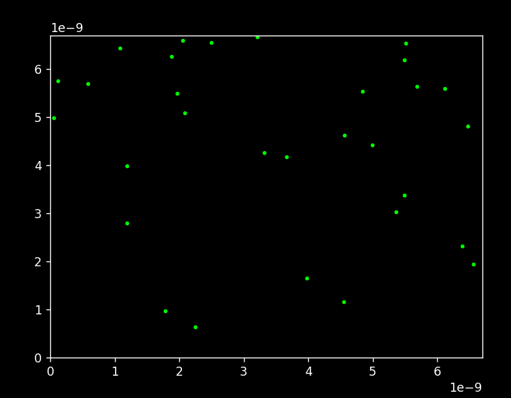
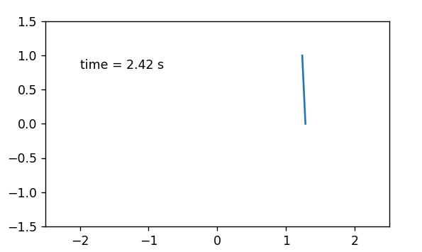
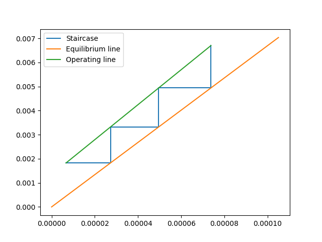

โพรเจกต์นี้เป็นงานอดิเรกสำหรับศึกษาองค์ความรู้พื้นฐานสำหรับการสร้างแบบจำลองที่ซับซ้อนขึ้นเพื่อทำนายสมบัติต่าง ๆ ของสารในอนาคต ผมเชื่อเสมอว่าองค์ความรู้ระดับ แนวหน้าของโลกเกิดได้จากเฉพาะผู้มีความเข้าใจหลักการพื้นฐานขององค์ความรู้นั้นเท่านั้น ดังนั้นผมจึงเริ่มจากการพิจารณาระบบแก๊สอุดมคติแล้วค่อย ๆ ใช้คณิตศาสตร์ไล่ สร้างสมการคำนวณการเคลื่อนที่ของแต่ละอนุภาค การชนขอบเขต และการหาอุณหภูมิและความดันจากข้อมูลเชิงสถิติของโมเลกุลทุกตัวร่วมกัน การจำลองดังกล่าวส่งผลให้ ยืนยันได้ว่าค่าคงที่แก๊สมีค่าประมาณ 8.31446 จริง โดยคำนวณหาค่าคงที่โบล์ทซ์มันน์ได้ความแม่นยำเทียบค่ามาตรฐานประมาณ 99.98% จากนั้นจึงเริ่มพัฒนาแบบจำลอง ให้รองรับแก๊สจริงมากขึ้นโดยเลือกเป็นแก๊สอาร์กอนเนื่องจากตามธรรมชาติมักมีอะตอมเดียวต่อโมเลกุลโดยใช้ Lennard-Jones เป็นแบบจำลองศักย์ไฟฟ้าของอะตอม ในที่นี้จำเป็นต้องพัฒนาระเบียบวิธีการคำนวณใหม่จาก Euler Integration เป็น Velocity Verlet Integration เพื่อรองรับแรงกระทำต่อแต่ละอนุภาค และต้อง เพิ่ม Thermostat เพื่อควบคุมให้ระบบอยู่ใน NVT Ensemble แทนที่จะเป็น NVE Ensemble จากของเดิม ในที่นี้สำหรับการคำนวณในขนาดใหญ่จึงเริ่มเปลี่ยนไปใช้ การคำนวณบน GPU แต่โดยทั่วไปแล้วไม่จำเป็น เนื่องจากการคำนวณโดยใช้ Monte-Carlo ในจำนวน 1000-10000 ค่อนข้างให้ค่าที่แม่นยำคงที่แล้ว การใช้ GPU จึงเปลืองพลังงานในการส่งข้อมูลไปทำงานบน VRAM แทนที่จะใช้ CPU และ RAM ที่มีอยู่แล้วและเข้าถึงได้ไวกว่า
ทักษะที่ใช้ : Python, NumPy, Matplotlib, PyTorch
สิ่งที่ได้ : กลศาสตร์เชิงสถิติ, พลศาสตร์โมเลกุลพื้นฐาน, Velocity Verlet Integration, การเขียนโปรแกรมบน GPU

โพรเจกต์นี้เป็นงานอดิเรกที่ทำเพื่อศึกษาระบบพลวัตที่ไม่เสถียรและควบคุมได้ยาก ขั้นแรกเริ่มจากการพิจารณาระบบโดยใช้องค์ความรู้กลศาสตร์บนกรอบอ้างอิงไม่เฉี่อยเพื่อสร้าง แบบจำลองขึ้นมา จากนั้นจึงใช้ระเบียบวิธี RK4 เขียนกราฟจำลองตามเวลาจริงออกมาเนื่องจากฟังก์ชันสำเร็จรูปต่าง ๆ ป้อนตัวแปรที่ปรับระหว่างการจำลองได้ยาก ต่อมาจึง เริ่มเขียนระบบควบคุมแบบ PID ผ่านการคุมทิศทางและปริมาณแรงที่กระทำต่อฐานลูกตุ้มเพื่อให้ลูกตุ้มตั้งดิ่งบนตำแหน่งเริ่มต้นได้ ดังนั้นจึงต้องใช้ cascaded PID เพื่อควบคุม ทั้งตำแหน่งและมุมเอียงของลูกตุ้มพร้อมกันโดยการปรับเพียงแรงกระทำต่อฐานลูกตุ้มอย่างเดียว อย่างไรก็ตามการลองทำให้ทำให้เห็นว่าการปรับพารามิเตอร์ตามวิธี Ziegler-Nichols ไม่ได้ผลเพราะระบบไม่เสถียร และแม้จะพยายาม linearize เพื่อวาด root locus ก็ยังไม่สามารถทำให้ระบบควบคุมได้ หลังลองผิดลองถูกหลายครั้งจึงหาพารามิเตอร์ที่เหมาะสมได้ โดยต้องใช้ override control ร่วมด้วยเพื่อป้องกันไม่ให้ setpoint จาก outer loop คุมให้ลูกตุ้มเอียงเกินขอบเขตที่เสถียร อย่างไรก็ตามระบบก็ยังคงเสถียรแค่ ในมุมเอียงเล็ก ๆ เท่านั้น หลังการสืบค้นจึงค้นพบว่าตัวควบคุม PID มีข้อจำกัดเรื่องความช้าในการควบคุมและการใช้พลังงานในการควบคุมมากเกินไป
ทักษะที่ใช้ : Python, NumPy, Matplotlib
สิ่งที่ได้ : กลศาสตร์บนกรอบอ้างอิงไม่เฉี่อย, การปรับตัวควบคุม PID, Root Locus, การวัดสมรรถนะของตัวควบคุม

โพรเจกต์นี้ได้แรงบันดาลใจมาจากการบ้านให้คำนวณจำนวนชั้นของหอดูดซึมที่ต้องเขียนกราฟในช่องว่างระหว่างเส้นที่เล็กเกินกว่าตาจะมองเห็น การบ้านดังกล่าวทำให้เกิดความ สงสัยว่าในการออกแบบใช้กราฟดังกล่าวได้ แต่ในการทำงานจริงความเข้มข้นของสารต่าง ๆ จะต่างออกไปจากตอนออกแบบแน่นอน แต่หลักการดุลมวลและอุณหพลศาสตร์ยังคงเดิม ดังนั้นจึงเกิดแนวคิดในการสร้าง Python package เพื่อใช้ในการคำนวณทั้งหมดนี้แทนที่จะใช้โปรแกรม Aspen Plus ที่ทั้งมีขนาดใหญ่ ราคาแพง และมีระบบวิธีการคิดไม่โปร่งใส เท่าการคำนวณเอง ในที่นี้จึงมีระบบการคำนวณ pinch point อัตโนมัติ การเลือกใส่ได้ว่าจะใช้ recovery หรือ purity เท่าไร และสำหรับการดำเนินการจะใช้ Newton's Method เพื่อหาพารามิเตอร์ที่ต้องปรับโดยพิจารณาผ่าน graphical intuition ทำให้ได้โปรแกรมขนาดเล็ก คำนวณเร็ว และแม่นยำระดับ machine precision โดยไม่ติดปัญหา divergence
ทักษะที่ใช้ : Python, NumPy, Matplotlib
สิ่งที่ได้ : Graphical Intuition สำหรับกระบวนการแยกสาร
กำลังดำเนินการ (Keywords : Control, Crystallization, Pharmaceutical, Deep Learning, *Secret Frontier Math*)